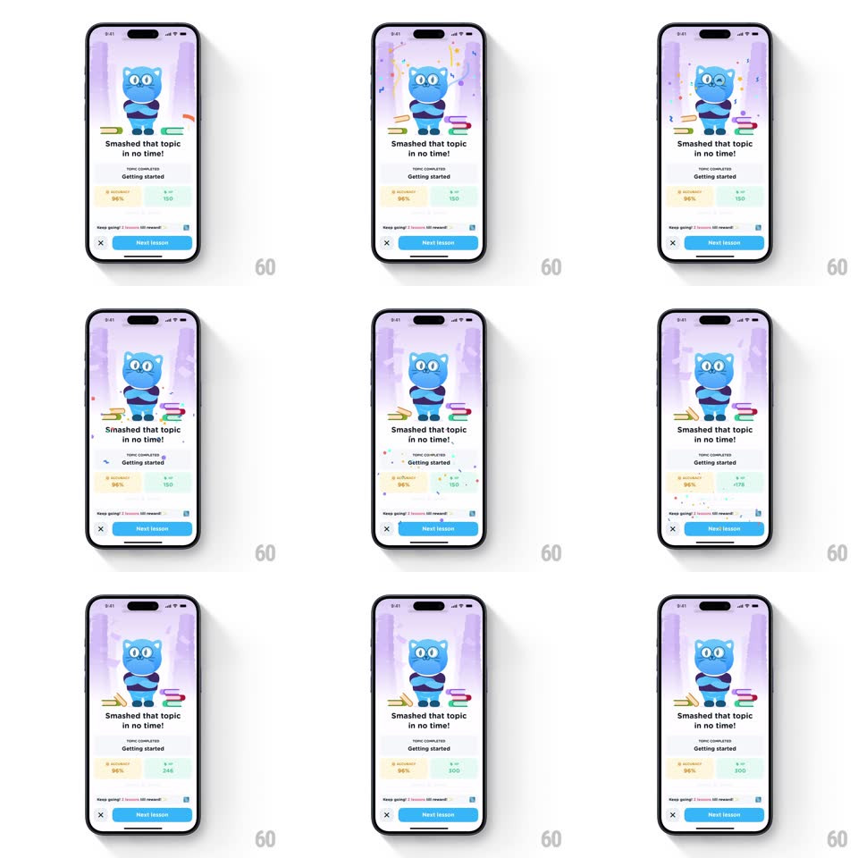

Media
Frame-by-frame

Rebuild this interaction 1:1: Airlearn's topic completion celebration - the screen fades in on a proud blue cat mascot standing on books, a confetti burst fires from the top, and the two stat cards (accuracy % and XP) count up before the "Next lesson" button becomes active.

Rebuild this interaction 1:1: Airlearn's topic completion celebration - the screen fades in on a proud blue cat mascot standing on books, a confetti burst fires from the top, and the two stat cards (accuracy % and XP) count up before the "Next lesson" button becomes active. ## Integration Integration: stack-agnostic spec - springs given as stiffness/damping, timed motions as duration + curve; map every value to your framework and animation library of choice. ## Scene Mobile screen, lavender gradient background with soft light beams. Top half: blue cat mascot with glasses standing on a stack of books. Below: "Smashed that topic in no time!" headline, "TOPIC COMPLETED / Getting started" label, two stat cards side by side (accuracy "96%" with a small icon, XP total with a bolt icon), a "Keep going! 2 lessons till reward" progress strip, and a bottom bar with a close X and a wide blue "Next lesson" button. ## Motion spec Pattern: celebration entrance with count-up stats. - Screen content fades in from white (300ms); mascot settles with a small bob (translateY 8px -> 0, spring ~200/16). - Confetti: one burst of ~50 pieces (pink, yellow, teal, purple) from the top-center, radial ejection with gravity and rotation, ~1.6s to clear. - Stat cards count up: accuracy ticks 0 -> 96% and XP ticks up to its final value (both ~900ms, ease-out, starting ~300ms after the burst). - "Next lesson" button fills from a muted to a solid blue and becomes tappable when the count completes. ## Calibration - One confetti burst only - this is a completion moment, not an ongoing party. - Stat count-ups are the secondary beat; they must start after the burst, not with it. ## Reduced motion Content fades in (200ms) with final stat values; no confetti, no count-up. ## Don't miss - The light beams behind the mascot are static art; only confetti and counters move. - XP card uses the green bolt icon; accuracy card uses a different (target/check) glyph - do not duplicate icons.